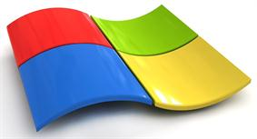

Windows XP или Windows 7 — что лучше.

Windows XP или Windows 7 - что лучше?
Всем известно, что технический прогресс не стоит на месте что и производит до выхода новых операционных систем как вот ми видим например Windows
Vista и Windows 7. Но так как Windows Vista считается неудачной, и с этим согласились все пользователи, мы рассмотрим устаревшую, но проверенную
Windows XP и новую
установку Windows 7.
Сейчас этот вопрос очень актуальный и будет таким ещё очень много времени, ведь споры на эту тему будут продолжаться пока они эти версии Windows
используются на компьютерах. Но все, же я хочу вас ознакомить с некоторыми фактами, которые помогут вам определится.
Что касается нагрузки на систему то тут Windows XP имеет небольшое преимущество. Самая популярная версия Windows XP Service Pack 3 без напокованных
программ тянет на себя 200 - 250 мегабайт оперативной памяти, в то время как Windows 7 - 500-600. Спросите, почему небольшое? Потому что в отличие
от Windows XP, Windows 7 умеет думать и ставить приоритеты на программы (например, во время игры может позакрывать не используемые программы,
но при выходи из неё запустит всё назад или может помочь компьютеру разогнать видеокарту), в, то время как в XP просто тупо выполняет поставленные задачи.
Как известно Windows XP это 32-х разрядная система, а Windows 7 может быть 32-х и 64-х разрядной. Разница в том, что 64-х разрядная система передает
процессору вдвое больше информации, что естественно даёт возможность обработать информацию быстрее и не так нагружать процессор.
Ещё одна интересная вещь в том, что новые компьютеры для игр, в которых оперативная память 8 гигабайта и выше, так как и мощные ноутбуки никогда
не будут пользоваться Windows XP, потому что XP поддерживает только 3 гигабайта оперативки. Она будет работать, но только с 3 гигабайтами, что сами
понимаете не очень эффективно.
Так что выбор за вами.
Следующая статья:
Выбираем компьютерную клавиатуру.